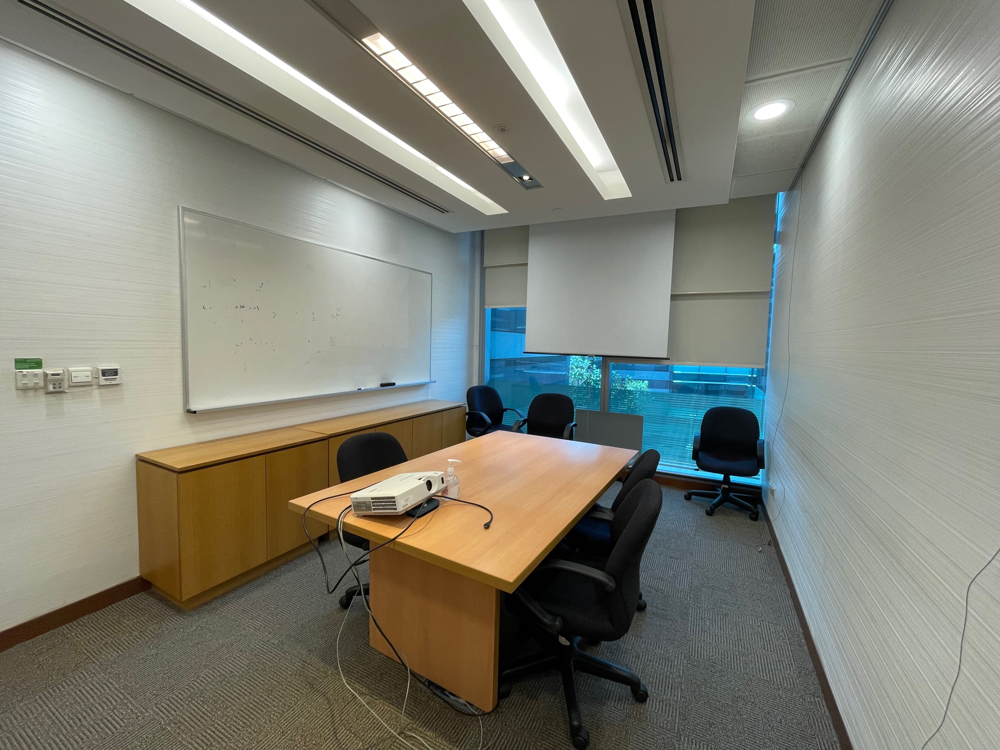
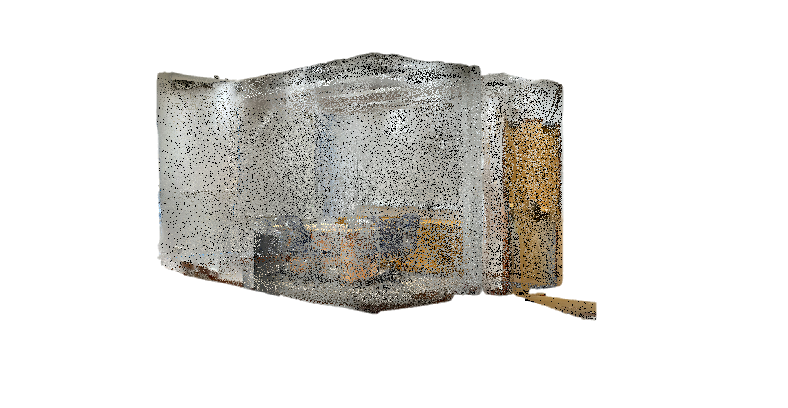
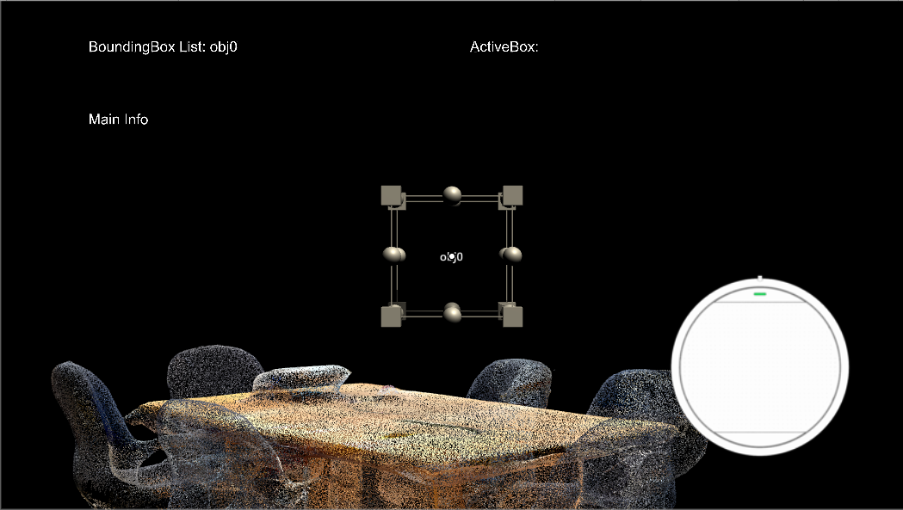
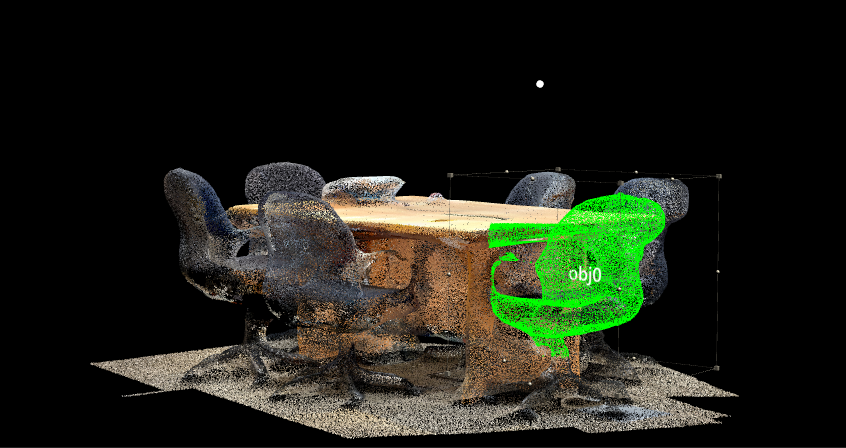
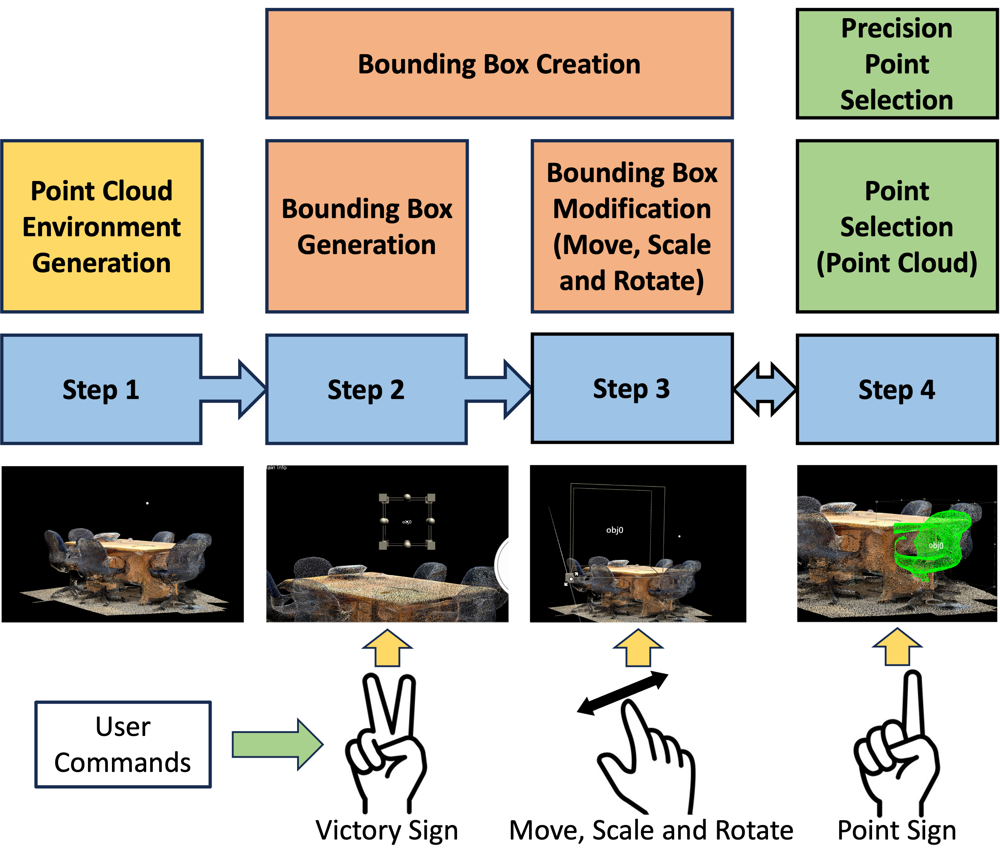
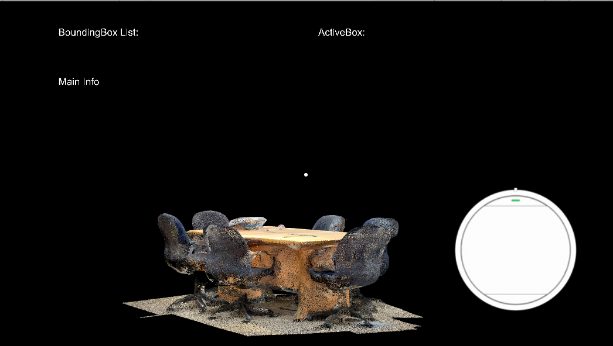
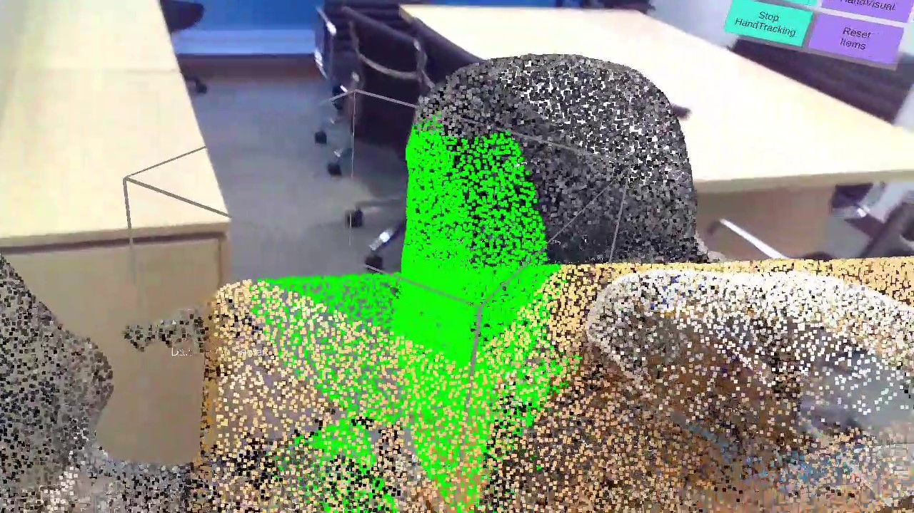

Accessibility & extended reality · Singapore Management University · 2022–2023
Making indoor spaces
interactive in AR.
Point-cloud annotation and object selection with Nreal Light
Within my broader research on accessible indoor interaction, I developed Unity C# prototypes for Nreal Light AR glasses. The materials shown here focus on representing indoor spaces as point clouds and letting users identify, select, and manipulate spatial regions.


My contribution
Developed the headset prototypes, integrated point-cloud representations, and explored speech, text, pointer and gesture based selection and manipulation.
Tools
Unity · C# · Nreal Light · iPhone LiDAR point clouds · interaction prototyping
Design challenge
How can a person indicate the intended object when spatial regions overlap or sit inside one another?
Prototype workflow
From a room scan to a selected object
Load the environment
Bring the captured indoor point cloud into the application.
Create a region
Use the open-hand and victory gestures to initialise interaction and generate a bounding box.
Refine its bounds
Move, rotate, or scale the box using pinch-based manipulation.
Select the points
Use a pointing gesture to select points within the bounding-box region.


Explore the interaction design & prototype developmentGesture flow · selection ambiguity · alternatives and trade-offs
01 / Interaction flow
Connect gestures to visible spatial changes
The prototype uses hand gestures for distinct steps: initialisation, box creation, manipulation, and point selection. The workflow separates these actions so the user can define a region before selecting its contents.



02 / The usability problem
When several boxes could be the target
Spatial selection becomes ambiguous when one box is nested inside another, when objects partly overlap, or when a component belongs to a larger object. A movement intended for one box can instead affect a different box.
This mismatch between intended and recognised selection is an interaction problem that requires explicit target selection.
03 / Implemented exploration
Make one candidate active at a time
As a solution, we first implemented three scheduling approaches. Each activates a candidate box for a timed interval, with manipulation affecting the active box.
| Approach | Selection order | Design consideration |
|---|---|---|
| Round robin | Object-creation order | Predictable sequence, but the user may need to wait. |
| Priority order | Assigned priority. Proximity is explored | The ordering needs to match the user’s current task. |
| Random order | Randomised candidate sequence | Less predictable access to a particular target. |
These considerations explain the design space.
Let the user finish
This implementation does consider about what happens when a timed interval ends during manipulation. The proposed refinement waits for the interaction to finish and adds a short confirmation interval before advancing, allowing room for a follow-up adjustment.
04 / Proposed alternatives
Give the user a more direct choice
Later designs explores a dropdown or button list, voice commands, gaze with pinch confirmation, and a hand ray with pinch confirmation. It also proposes narrowing the candidate set to nearby objects when the environment contains many selectable regions.
These are presented as design proposals. Not all were deployed or evaluated.
Prototype context
Building toward accessible spatial interaction
The wider project concerns accessibility and indoor interaction. These specific examples demonstrate the annotation and selection prototype; they do not establish independent navigation performance or measured accessibility benefits.
The external video folder provides a place to explore the Unity and headset interaction recordings.
Descriptions distinguish prototype functionality from proposed design directions.